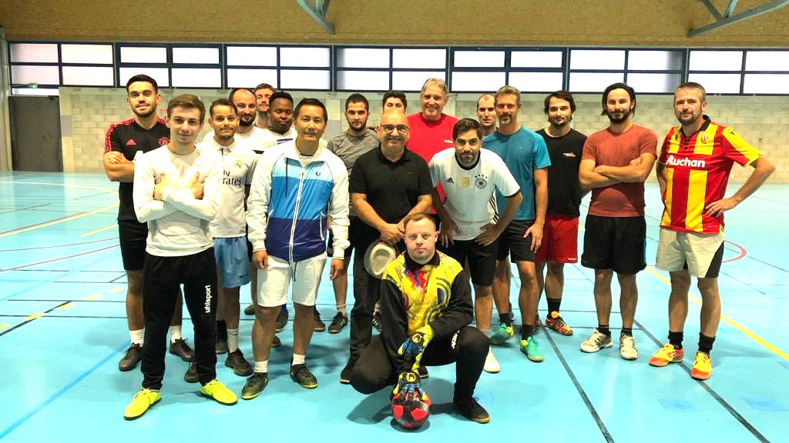

Section Futsal
Responsable : Wameng LY
wamengly@hotmail.com
Correspondant : Daniel BOURGEOIS
07 81 12 68 54
Président : Jean-Paul TABOYAN
06 89 66 25 81
jeudi : 19h00 - 21h30
VALENCE - gymnase Marcel Pagnol
21 adhérents à ce jour, sur un seul créneau (le jeudi de 19h à 21h30).
Un tournoi interne sera organisé le jeudi 21 avril. Récompenses : une coupe pour
l'équipe vainqueur et une coupe de meilleur buteur, plus un cadeau surprise
(tirage au sort)
Une rencontre de futsal va se dérouler au centre pénitencier de Valence
courant avril / mai.
GALERIE PHOTOS
L’objectif premier de la section est de se faire plaisir dans le jeu tout en respectant son adversaire. Pendant les collations nous donnons l’occasion aux joueurs d’apprendre à mieux se connaitre, et aux nouveaux de s'intégrer.
Les membres participent à des tournois dans des lieux variés : centre pénitencier de Valence, matches amicaux sur invitation, ou encore Télethon.
Pendant l’année, nous organisons deux tournois en interne, afin que les joueurs des deux créneaux puissent se rencontrer.
Depuis 2008, Arnaud, trisomique est membre : c’est un privilège de l’avoir dans nos effectifs. Une deuxième personne trisomique est arrivée en 2017, Martin, bien intégré également et qui prend du plaisir à jouer en équipe !